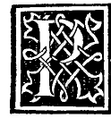

CAPITOLO LXXI¶
De quello se intenda per questi vocabuli fra le mathematici vsitati cioè ypothesi ypothumissa corausto cono pyramidale corda pentagonica perpendiculare catheto dyametro paralelo- grammo dyagonale centro saetta.

Sonno alcuni vocabuli excelso Duca inducti dali sapienti fra le mathematici discipline per intelligentia de lor parti acio in ninna se habia ‘equiuocare li quali achi in epso non fosse molto experto darebono noia, e sopra in questo nostro compendio spesso inserti commo hauerete legendo trouato. E per non deuiare dali antichi li auemo obseruati. Deli quali non senza vtilita mi par qui sucinte al lectore dar notitia. E prima dela ypothesi.
Per la ypothesi se deue intendere el presuposito amesso e concesso fra le parti auctore e aduersario mediante el quale se intende concludere, e negato non sequita conclusione. E pero non se costuma a meterlo sei non e possibile.
Per la ypothumissa in tutte le figure rectilinee maxime se intende la linea che al magior angulo de quelle fia opposita. Ma propriamente se costumato intendere. El lato opposìto alangulo recto neh triangoli rectangoli ouer ortogonii che cosi se chiamano in larte. Quali de necessita sempre sonno la mita dela figura quadrata onero del tetragon longo cioè figura rectangola de 4 lati più longa che larga.
Corausto se intende vna hnea recta quale congiugni le extremita dele doi in alto eleuate. E possano li corausti esser più e meno secondo el numero dele linee eleuate.
Cono dela pyramide voi dir el ponto supremo dela cima oue le linee che partano dala basa sua concorano.
Corda pentagonica ouer pentagonale o vogliamo dire delangolo pentagonico tutto se intende vna linea tirata deritta ucla figura pentagona de vno deli suoi qual si voglia angulo a l’altro a quello opposito commo più volte se facto.
La perpendiculare voi dir vna linea recta eleuata ouer situata sopra vnaltra a squadro cioè che facia vno o più angoli recti intorno a se. E cosi ancora quando ella stesse al modo dicto situata in su vna pian superficie. E coraunamente se costuma trouarla neli triangoli per lor mesura commo in dieta nostra opera a suo luogo dicemmo.
Catheto inporta el medesimo che la perpendiculare e per li vulgari grossamente neli trianguli fia dicto comuniter saetta del triangulo e vene dal greco vocabulo.
Dyametro propriamente se intende nel cerchio vna linea recta che passa pel suo centro e con le sue extremita tocca la circumferentia de ogni parte e diuide el cerchio in doi parti equali. Ma se costuma ancora neli quadrati dir el dyametro. E pero per non equiuocare se dici dyametro de cerchio e dyametro del quadrato a differentia deluno e delaltro.
Parallelogrammo se intende vna superficie de lati equidistanti, le quali propriamente sonno quadrilatere cioè quelle 4 specie che disopra àueste nel capitolo 69. diete quadrato tetragono longo rombo e romboide e per altro nome elmuaym e simile al elmuaym. E benché ogni figura de lati pari habia lati oppositi equidistanti commo lo exagono octagono. decagono. duodecagono e altre simili, non dimeno quelle 4 se hano particularmente a intendere.
Dyagonale principalmente se intende vna linea recta tirata da vnangulo alaltro opposito nel tetragono longo che lo diuida in doi parti equali ad rationem del quadrato. E ancora nel rombo e romboide se vsitano cosi chiamarla.
Centro propriamente fia dicto nel cerchio quel ponto medio nel qual fermando el pede imobile del sexto laltro girando el cerchio se descriue con la linea dieta circunferentia ouero periferia. E da quel ponto tutte le linee ala dieta circunferentia menate fra loro sonno equali. Ma se vsa ancora in laltre figure rectihnee dir eentro el ponto medio di lor superficie, commo neli triangoli quadrati pentagoni exagoni e altre equilatere e anco equiangole che da cadauno de li loro angoli al dicto ponto le recte protraete tutte similmente fra loro siranno equali.
Saetta fia dieta quella linea recta che dal ponto medio delarco dalcuna partione del cerchio si mone e cade a squadro nel mezzo dela sua corda, e dicise saetta respecto ala parte dela circumferentia che si chiama arco a similitudine delarco materiale che anche vsa dicti 3 nomi cioè corda arco e saetta.
E benché asaissimi altri vocabuli sienno vsitati deli quali apieno nela grandopera nostra habiamo tractato. non mi curo qui adurli ma solo questi necessarii ala intelligentia del presente compendio a vostra celsitudine me parso adure el quale se con tanto numero de carti non fia concluso, m.a non de menore substantia e altissime speculationi in epso se tractato. E veramente Excelso Duca non mentendo a vostra celsitudine dico la speculatione deli mathematici non poterse più alto virtualmente extenderse. auenga che aleuolte magiori e menori acagino le quantità.
E in questi el nostro philosopho Megarense concluse e termino tutto el suo volume de Arithmetica Geometria proportioni e proportionalita in XV. libri partiali distincto commo ala intelligente fia chiaro. E pero non poca gratia e dignità acrescera ala vostra prefata dignissima bibliotheca commo dinanze in la nostra epistola dicemmo, per esser lui vnico e solo di tale ordine a me composto, e a niun finqua (saluo a vostra celsitudine) in tutto lo vniuerso noto. E qui nela inclita vostra magna cita de Milano non con mediocri affani e longhe vigilie sotto lombra de quella e del suo quanto figliuolo mio immeritamente peculiare e singulare patrone San Galeazzo Sforza Seuerino de Aragonia aniuno nele militari posponendo.
E dele nostre discipline summo amatore, maxime ala giornata dela assidua sua lectione de quelle gustando sutilissimo e suaue fructo. E sia per conclusione del nostro processo la humil venia e debita reuerentia del perpetuo seruo de vostra celsitudine ala quale infinitamente in tutti modi se recomanda. Que iterum atque iterum ad vota felicissime valeat.
Finis a di 14. decembre in Milano nel nostro almo conuento MCCCCXCVII. Sedente summo pontifice Alexandro VI. del suo pontificato anno VII.
da.